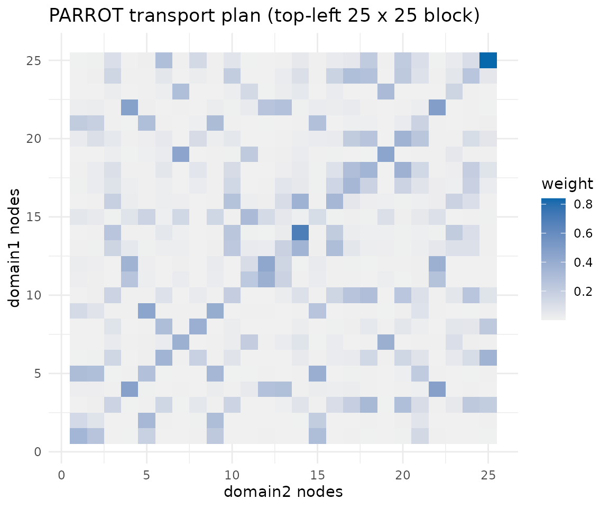
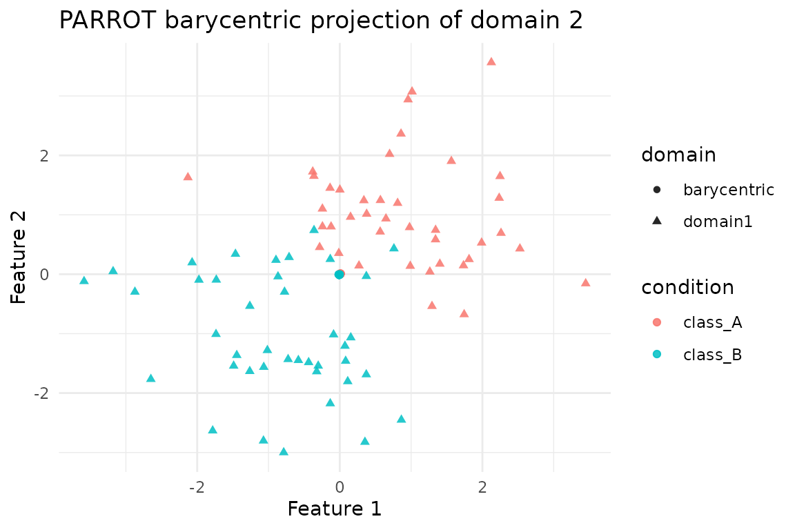

Overview
parrot() aligns two networks using position-aware
optimal transport. It builds Random-Walk-with-Restart (RWR) descriptors
for each domain, combines them with feature distances, and solves an
entropy-regularised transport problem that can optionally incorporate
known anchor correspondences.
We demonstrate the workflow on the shared
alignment_benchmark dataset, adding a small set of anchors
to guide the semi-supervised transport.
Preparing Anchored Domains
alignment_benchmark <- manifoldalign::alignment_benchmark
pair_domains <- alignment_benchmark$domains[1:2]
# Convert to multidesign objects
pair_multidesign <- lapply(pair_domains, function(dom) {
multidesign::multidesign(dom$x, dom$design)
})
# Add matching anchors (10 nodes) to each domain's design frame
set.seed(123)
num_anchors <- 10
anchor_idx <- sample(seq_len(nrow(pair_multidesign[[1]]$x)), num_anchors)
pair_multidesign[[1]]$design$anchor_id <- NA_integer_
pair_multidesign[[1]]$design$anchor_id[anchor_idx] <- anchor_idx
pair_multidesign[[2]]$design$anchor_id <- NA_integer_
pair_multidesign[[2]]$design$anchor_id[anchor_idx] <- anchor_idx
pair_names <- names(pair_multidesign)
node_counts <- vapply(pair_multidesign, function(dom) nrow(dom$x), integer(1))
hd_pair <- multidesign::hyperdesign(pair_multidesign)Running parrot
parrot_fit <- parrot(
hd_pair,
anchors = anchor_id,
ncomp = 8,
sigma = 0.2,
lambda = 0.05,
tau = 0.01,
alpha = 0.3,
gamma = 0.1,
solver = "sinkhorn",
max_iter = 80,
tol = 1e-5,
use_cpp = FALSE
)
str(parrot_fit, max.level = 1)
#> List of 8
#> $ v : num [1:8, 1:8] -1.89e-05 -1.24e-06 6.33e-05 -1.68e-05 -4.41e-05 ...
#> $ s : num [1:160, 1:8] -0.112 -0.112 -0.112 -0.112 -0.112 ...
#> $ sdev : num [1:8] 1.17e-06 1.12e-01 1.12e-01 1.12e-01 1.12e-01 ...
#> $ preproc :List of 1
#> ..- attr(*, "class")= chr [1:2] "prepper" "list"
#> $ block_indices :List of 2
#> $ alignment_matrix: num [1:80, 1:80] 1.30e-03 4.98e-04 7.15e-06 5.53e-05 1.14e-03 ...
#> $ transport_plan : num [1:80, 1:80] 1.30e-03 4.98e-04 7.15e-06 5.53e-05 1.14e-03 ...
#> $ anchors : Named int [1:160] NA NA NA NA NA NA NA NA NA NA ...
#> ..- attr(*, "names")= chr [1:160] "domain11" "domain12" "domain13" "domain14" ...
#> - attr(*, "class")= chr [1:2] "parrot" "multiblock_biprojector"Anchor and Class Diagnostics
The transport plan returned by parrot() is a soft
correspondence between the two domains. We use it to derive a hard
assignment (row-wise argmax) and inspect how well the anchors and latent
classes are preserved. Labels are used only for post-hoc diagnostics;
the optimisation itself only sees the anchor IDs.
transport <- parrot_fit$transport_plan
assignment <- apply(transport, 1, which.max)
ref_design <- pair_multidesign[[1]]$design
cmp_design <- pair_multidesign[[2]]$design
class_accuracy <- mean(ref_design$condition == cmp_design$condition[assignment])
anchor_rows <- which(!is.na(ref_design$anchor_id))
anchor_accuracy <- mean(
ref_design$anchor_id[anchor_rows] ==
cmp_design$anchor_id[assignment[anchor_rows]],
na.rm = TRUE
)
tibble(
metric = c("Class agreement", "Anchor recovery"),
value = c(class_accuracy, anchor_accuracy)
)
#> # A tibble: 2 × 2
#> metric value
#> <chr> <dbl>
#> 1 Class agreement 0.95
#> 2 Anchor recovery 1Visualising the Transport Plan
transport_norm <- as.matrix(transport / max(transport))
transport_df <- as_tibble(transport_norm, .name_repair = ~ paste0("V", seq_along(.))) %>%
mutate(source = dplyr::row_number()) %>%
pivot_longer(-source, names_to = "target", values_to = "weight") %>%
mutate(target = as.integer(sub("V", "", target)))
subset_df <- dplyr::filter(transport_df, source <= 25, target <= 25)
ggplot(subset_df, aes(x = target, y = source, fill = weight)) +
geom_tile() +
scale_fill_gradient(low = "#f0f0f0", high = "#0868ac") +
labs(title = "PARROT transport plan (top-left 25 x 25 block)",
x = paste(pair_names[2], "nodes"),
y = paste(pair_names[1], "nodes"),
fill = "weight") +
theme_minimal()
Barycentric Projection of Domain 2
Applying the transport plan to domain 2 (computing
S %*% X_2) yields a barycentric embedding in the coordinate
system of domain 1. This plot compares those barycentric points to the
original domain-1 positions, highlighting how PARROT warps the second
network while preserving class structure.
X1 <- pair_multidesign[[1]]$x
X2 <- pair_multidesign[[2]]$x
X2_bary <- transport %*% X2
bary_df <- tibble(
x = c(X1[, 1], X2_bary[, 1]),
y = c(X1[, 2], X2_bary[, 2]),
domain = rep(c("domain1", "barycentric"), each = nrow(X1)),
condition = rep(ref_design$condition, 2)
)
ggplot(bary_df, aes(x = x, y = y, colour = condition, shape = domain)) +
geom_point(alpha = 0.85) +
labs(title = "PARROT barycentric projection of domain 2",
x = "Feature 1", y = "Feature 2") +
theme_minimal()
Summary
-
parrot()blends feature distances with position-aware RWR descriptors and anchors to produce a soft alignment. - On this benchmark pair a handful of anchors is enough to correctly recover the class structure and all provided anchors, and the barycentric projection shows domain 2 collapsing neatly onto domain 1.
- The same dataset underpins the
cone_align,gpca_align, andkemavignettes, enabling like-for-like comparison across alignment strategies.
Multi-domain consensus and diagnostics (align_many)
For three or more domains, you can use the generic orchestrator
align_many() with the PARROT adapter and a global,
cycle-consistent permutation consensus. Diagnostics such as edge and
cycle residuals and entropy metrics are returned.
# Example (not run): align 3 domains and inspect diagnostics
# (eval=FALSE to keep vignette light)
# pick three domains from the benchmark
triplet <- alignment_benchmark$domains[1:3]
X_list <- lapply(triplet, `[[`, "x")
# Run PARROT across all three with spectral permutation consensus
res <- align_many(
domains = X_list,
algo = parrot_aligner(),
graph = "auto",
sync = list(perm = list(mode = "spectral", rounding = "sinkhorn"))
)
# Inspect diagnostics
res$diagnostics$edge_residuals # per-edge constraint residuals
res$diagnostics$mean_edge_residual # global mean
res$diagnostics$cycle_residuals # per-triangle residuals (if any)
res$diagnostics$entropy # per-domain soft-assignment entropy
# Barycentric embeddings to the consensus for domain 1
Z1 <- res$embeddings[[1]]
# Visualise cycle-consistency as a heatmap (min over paths)
library(ggplot2)
p_cc <- plot_cycle_consistency(res$diagnostics, aggregate = "min")
print(p_cc)
# Visualise edge residuals as a heatmap
p_er <- plot_edge_residuals_heatmap(res$diagnostics)
print(p_er)
# Summarize worst edges (top 5 by residual)
summarize_bad_edges(res$diagnostics, top = 5)